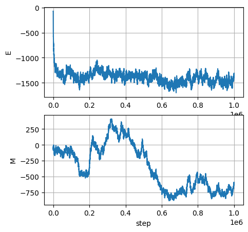
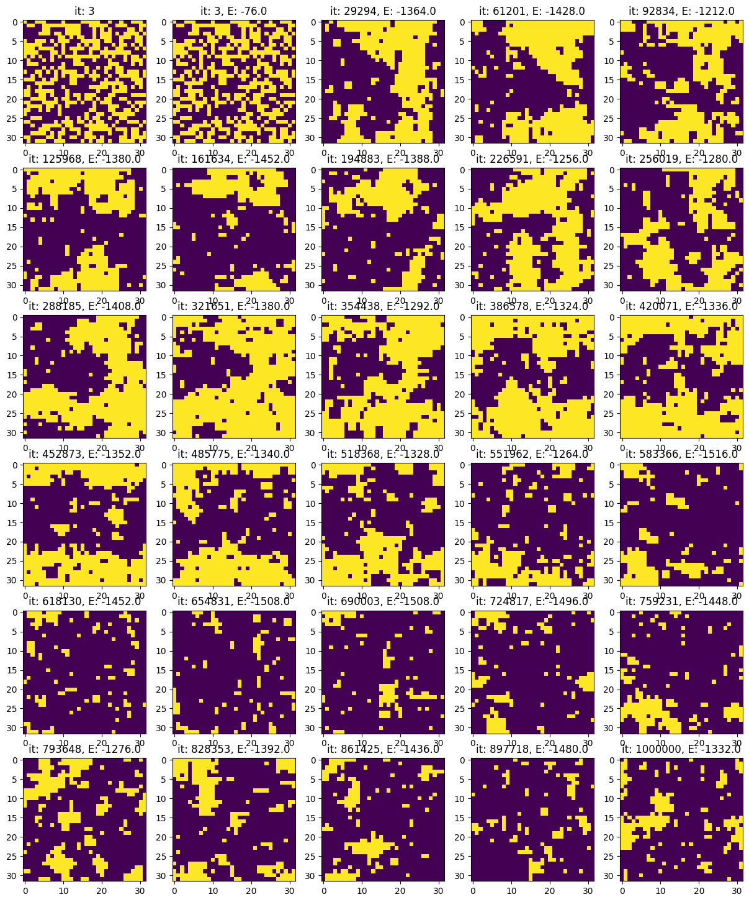
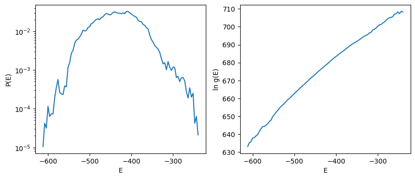
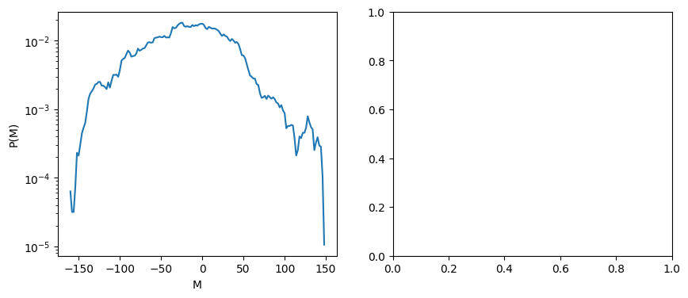

11.3. Ising model - Numerics#
Some references:
https://farside.ph.utexas.edu/teaching/329/lectures/node110.html
O.Rojas, Spectral mechanism and nearly reducible transfer matrices for pseudotransitions in one-dimensional systems, https://arxiv.org/html/2511.18109v2
L.Onsager, 1944, https://arxiv.org/html/2412.07328v1 really useful?
"""
Ising model on regular 2D lattice with periodic boundaries
The Hamiltonian, H, is used to define the probability of the (micro)states of the system
following a Boltzmann probability distribution p_i ~ e^( - E_i / T ) = e^( - beta * E_i ).
The expression of the Hamiltonian reads: H = .5 * J_{ij} s_i s_j + M p_i s_i
First with low-dimensional lattice:
Then increasing the dimensions:
Samples states from the distribution p_i using Metropolis-Hastings method
"""
import numpy as np
11.3.1. \(m \times n\) lattice#
#> Useful functions for ising model on 2D lattice
class IsingLattice():
def __init__(self, m=3, n=3, J=1., M=0., T=1.):
""" """
self.m = m
self.n = n
self.J = J
self.M = M
self.T = T
def initialize(self,):
""" """
set_random_state()
# Other initializations? Compatible with {-1, +1} spin values
def set_random_state(self,):
""" """
self.state = 2 * np.random.randint(0,2, size=(self.m, self.n)) - 1
self.E0 = self.compute_total_energy()
def flip_indices(self,):
""" """
return np.random.randint(0, self.m), np.random.randint(0, self.n)
def flip_loc(self, i,j):
""" """
self.state[i,j] *= -1
def flip(self,):
""" """
self.state[self.flip_indices()] *= -1
def compute_local_energy(self, i,j):
"""
Energy contribution due to [i,j] element of state reads
E_local[i,j] = - J s[i,j] \sum_{(k,l)\in B(i,j)} s[k,l] - M s[i,j]
Flipping the state, s[i,j] -> -s[i,j], gives a energy difference
E_local_flip[i,j] - E_local[i,j] = 2 ( J s[i,j] \sum_{} s[k,l] + M s[i,j] ) =
= - 2 E_local[i,j]
"""
neighbor_sum = self.state[(i+1)%self.m, j] + self.state[(i-1)%self.m, j] + \
self.state[i, (j+1)%self.n] + self.state[i, (j-1)%self.n]
return - self.state[i,j] * ( self.J * neighbor_sum + self.M )
def compute_total_energy(self,):
# For efficiency, use vector operations and avoid nested for loops
# Just shift up and left, to avoid double counting in an efficient way
up = np.roll(self.state, shift=1, axis=0)
left = np.roll(self.state, shift=1, axis=1)
# Energy = -J * sum(spin * neighbors)
return - self.J * np.sum(self.state * (up + left)) - self.M * np.sum(self.state)
def compute_total_magnetization(self,):
""" """
return np.sum(isi.state)
def compute_avg_magnetization(self,):
""" """
return np.mean(isi.state)
def metropolis_hastings_run(self, n_steps=100, output_states=False):
""" """
E = self.compute_total_energy()
Es = [ E ]
Ms = [ self.compute_total_magnetization() ]
states = []
if output_states: states += [ self.state.copy() ]
i_step = 0
for i_step in range(n_steps):
#> 1 step of Metropolis-Hastings algorithm
dE = self.metropolis_hastings_step() # Updating state with flip
E += dE # Update system energy
#> Update output arrays
Es += [ E ]
Ms += [ self.compute_total_magnetization() ]
if output_states:
states += [ self.state.copy() ] # <-- ! Memory. Add some sampling period,
# or dumping method. Don't store the state
# at all the timesteps.
#> Update step index
i_step += 1
return Es, Ms, states
def metropolis_hastings_step(self,):
""" """
#> Proposal step
i_flip, j_flip = self.flip_indices() # random sampling of the flip indices
dE = - 2 * self.compute_local_energy(i_flip, j_flip) # evaluate delta energy
if dE < 0: # accept
self.flip_loc(i_flip, j_flip)
else:
p_flip = np.exp( -dE / self.T )
if np.random.random() < p_flip: # flip
self.flip_loc(i_flip, j_flip)
else: # reject flip proposal
dE = 0
return dE
#> Parameters
m, n = 32,32 # 16, 16
J, M = 1., 0. # 1.
Tc = 2.26918 # 2.26918 * J/k = T_critical
T = Tc * 1.
#> Ising Lattice Model
isi = IsingLattice(m=m, n=n, T=T, M=M, J=J)
isi.set_random_state()
print(f"Lattice dimensions: {m},{n}")
print( "Initial conditions:")
print(f"Energy : {isi.E0}")
print(f"N. of spin up: {np.sum(isi.state[isi.state > 0])}")
print(f"Magnetization: {np.sum(isi.state)}")
#> Run Metropolis-Hastings algorithm
Es, Ms, states = isi.metropolis_hastings_run(n_steps=int(1e6), output_states=True)
Lattice dimensions: 32,32
Initial conditions:
Energy : -16.0
N. of spin up: 520
Magnetization: 16
---------------------------------------------------------------------------
KeyboardInterrupt Traceback (most recent call last)
Cell In[3], line 18
15 print(f"Magnetization: {np.sum(isi.state)}")
17 #> Run Metropolis-Hastings algorithm
---> 18 Es, Ms, states = isi.metropolis_hastings_run(n_steps=int(1e6), output_states=True)
Cell In[2], line 74, in IsingLattice.metropolis_hastings_run(self, n_steps, output_states)
71 i_step = 0
72 for i_step in range(n_steps):
73 #> 1 step of Metropolis-Hastings algorithm
---> 74 dE = self.metropolis_hastings_step() # Updating state with flip
75 E += dE # Update system energy
77 #> Update output arrays
Cell In[2], line 92, in IsingLattice.metropolis_hastings_step(self)
90 """ """
91 #> Proposal step
---> 92 i_flip, j_flip = self.flip_indices() # random sampling of the flip indices
93 dE = - 2 * self.compute_local_energy(i_flip, j_flip) # evaluate delta energy
95 if dE < 0: # accept
Cell In[2], line 23, in IsingLattice.flip_indices(self)
21 def flip_indices(self,):
22 """ """
---> 23 return np.random.randint(0, self.m), np.random.randint(0, self.n)
KeyboardInterrupt:
import matplotlib.pyplot as plt
fig, ax = plt.subplots(2,1, figsize=(5,5))
ax[0].plot(Es); ax[0].set_ylabel('E'); ax[0].grid()
ax[1].plot(Ms); ax[1].set_ylabel('M'); ax[1].grid()
ax[1].set_xlabel('step')
nrows_plots = 6
ncols_plots = 5
n_plots = nrows_plots * ncols_plots
i_plot = 0
#> Indices of all the flipping time steps
indices = np.where(np.diff(Es) != 0)[0] + 1
n_flips = len(indices)
d_indices = np.max([n_flips // n_plots, 1])
indices_plot = indices[d_indices * np.arange(n_plots)]
indices_plot[n_plots - 2] = len(Es)-1
# print(d_indices)
# print(np.arange(n_plots))
# print(indicesthere
# print(indices_plot)
fig, ax = plt.subplots(nrows_plots, ncols_plots, figsize=(3*ncols_plots, 3*nrows_plots))
ax[0,0].imshow(states[0])
ax[0,0].set_title(f"it: {indices_plot[i_plot]}")
i_plot += 1
while i_plot < n_plots and i_plot < len(indices):
row_plot = i_plot // ncols_plots
col_plot = i_plot - row_plot * ncols_plots
ax[row_plot, col_plot].imshow(states[indices_plot[i_plot-1]], vmin=-1, vmax=1)
ax[row_plot, col_plot].set_title(f"it: {indices_plot[i_plot-1]}, E: {Es[indices_plot[i_plot-1]]}")
i_plot += 1
plt.show()


from scipy.special import logsumexp
#> Sample the stationary probability density function
burn_in = 5000 # From visual inspection
Es_stationary = np.array(Es[burn_in:]) # Discard transient evolution
#> Evaluate P(E) from time history
energy_levels, counts = np.unique(Es_stationary, return_counts=True)
pE = counts / np.sum(counts)
ln_g_tilde = np.log(pE) + energy_levels / isi.T
# N = 2 ** (isi.m, isi.n)
ln_N = isi.m * isi.m * np.log(2)
ln_Z = ln_N - logsumexp(ln_g_tilde)
ln_g = ln_Z + ln_g_tilde
#> P(M) probability distribution of magnetization, from time history
Ms_stationary = np.array(Ms[burn_in:]) # Discard transient evolution
mag_levels, mag_counts = np.unique(Ms_stationary, return_counts=True)
pM = mag_counts / np.sum(mag_counts)
fig, ax = plt.subplots(1,2, figsize=(10,4))
ax[0].semilogy(energy_levels, pE)
ax[1].plot(energy_levels, ln_g)
ax[0].set_xlabel('E'); ax[0].set_ylabel('P(E)')
ax[1].set_xlabel('E'); ax[1].set_ylabel('ln g(E)')
# ---
fig, ax = plt.subplots(1,2, figsize=(10,4))
ax[0].semilogy(mag_levels, pM)
# ax[1].plot(energy_levels, ln_g)
ax[0].set_xlabel('M'); ax[0].set_ylabel('P(M)')
# ax[1].set_xlabel('E'); ax[1].set_ylabel('ln g(E)')
Text(0, 0.5, 'P(M)')


"""
Old script using histrograms
#> Sample the stationary probability density function
burn_in = 1000 # From visual inspection
Es_stationary = np.array(Es[burn_in:]) # Discard transient evolution
fig, ax = plt.subplots(1,1, figsize=(5,5))
ax.hist(Es_stationary, density=True)
ax.grid()
ax.set_xlabel('E')
# ax.plot(Es_stationary, np.exp(Es_stationary/isi.T), color='red')
# P(E) = g(E) * exp(-beta*E) / Z
# Z is the partition function, that works as the normalization factor
# g(E) is the number of degenerate states with energy = E
# Thus:
# - P(E) can be evaluated from samples
# - exp(-beta*E) is known for every value E
# - g(E) / Z can be evaluated as P(E) / exp(-beta*E) for every value E
#
# Z = sum_E ( g(E) * exp(-beta*E) )
# ...is it possible to find Z and thus g(E)?
"""
"\nOld script using histrograms\n\n#> Sample the stationary probability density function\nburn_in = 1000 # From visual inspection\nEs_stationary = np.array(Es[burn_in:]) # Discard transient evolution\n\nfig, ax = plt.subplots(1,1, figsize=(5,5))\nax.hist(Es_stationary, density=True)\nax.grid()\nax.set_xlabel('E')\n# ax.plot(Es_stationary, np.exp(Es_stationary/isi.T), color='red')\n\n# P(E) = g(E) * exp(-beta*E) / Z\n# Z is the partition function, that works as the normalization factor\n# g(E) is the number of degenerate states with energy = E\n# Thus:\n# - P(E) can be evaluated from samples\n# - exp(-beta*E) is known for every value E\n# - g(E) / Z can be evaluated as P(E) / exp(-beta*E) for every value E\n#\n# Z = sum_E ( g(E) * exp(-beta*E) )\n# ...is it possible to find Z and thus g(E)?\n\n"
The relation between state probability \(P(E)\) - i.e. probability of getting a microstate with energy \(E\) -, degeneracy number \(g(E)\) - i.e. the number of microstates with energy \(E\) - and the Boltzmann distribution \(\propto e^{-\beta E}\) reads
Once the value \(E\) of energy levels is known, the exponential is known. Probability \(P(E)\) is sampled from experiments. Thus
If the total number of microstate is not known, \(g(E)\) can be evaluated up to a multiplicative constant.
If the total number of microstates is known, \(\sum_E g(E) = N\), it’s possible to compute all the values of \(g(E)\) and \(Z\). In this case, a linear system reads
and thus
Log to avoid numerical exceptions.
In order to evaluate \(Z\),
and avoid overflow, the largest contribution is factored using the relation
The largest exponential corresponds to energy value \(E_0\) at the maximum of \(P(E)\) as
Then the value of the partition function becomes
begin \(\Delta f = f(E) - f(E_0)\), and \(E_0\)
If \(N\) is known, \(N = \sum_E g(E)\)